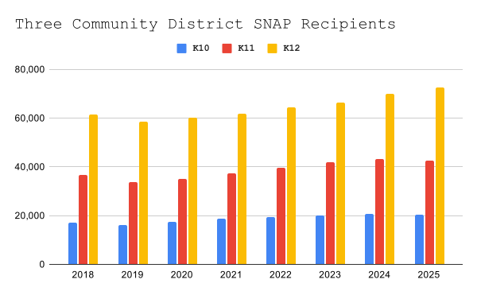

Rising Food Insecurity Pressures Community Board 10 as Residents Rely on Limited Pantries

Bay Ridge Community Development Center preparing for bi-weekly food distribution.
Photo credit: Bay Ridge Community Development Center
Community Board 10 does not tell the whole story, but it stands out in several ways.
The board, which covers Bay Ridge, Dyker Heights and Fort Hamilton, has the lowest number of SNAP recipients in the area. That number has been steadily rising.
Each of these neighborhoods has only a small number of food pantries and related resources, so many residents travel to other communities to find help.
Out of the three surrounding areas, Community Board 10 is of its three neighborhoods has only three food-assistance sites, while nearby Community District 12 has more than 70,000 SNAP recipients.

Three surrounding community districts each have different amounts of food pantries. These three areas attempt to help each other out.
Even with the lowest number of SNAP recipients, Community Board 10 is not exempt from growing need as food prices climb and more people rely on emergency resources. Food pantries are now seeing pre-pandemic levels of demand, and when distributions end for the day, residents still need to find their next meal.